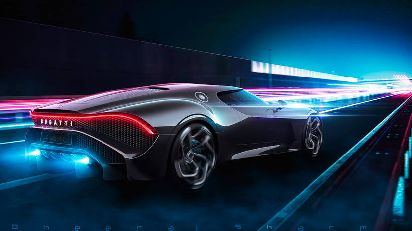
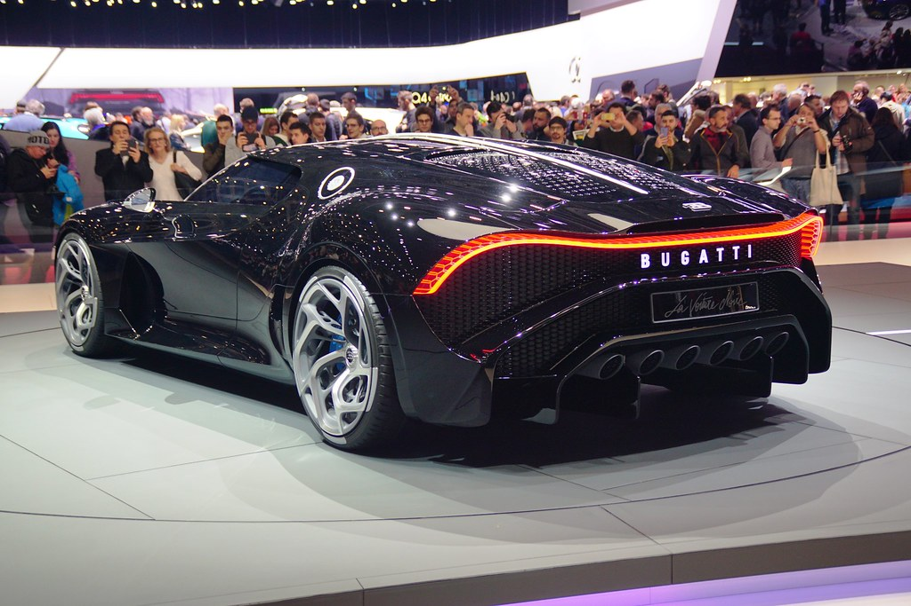
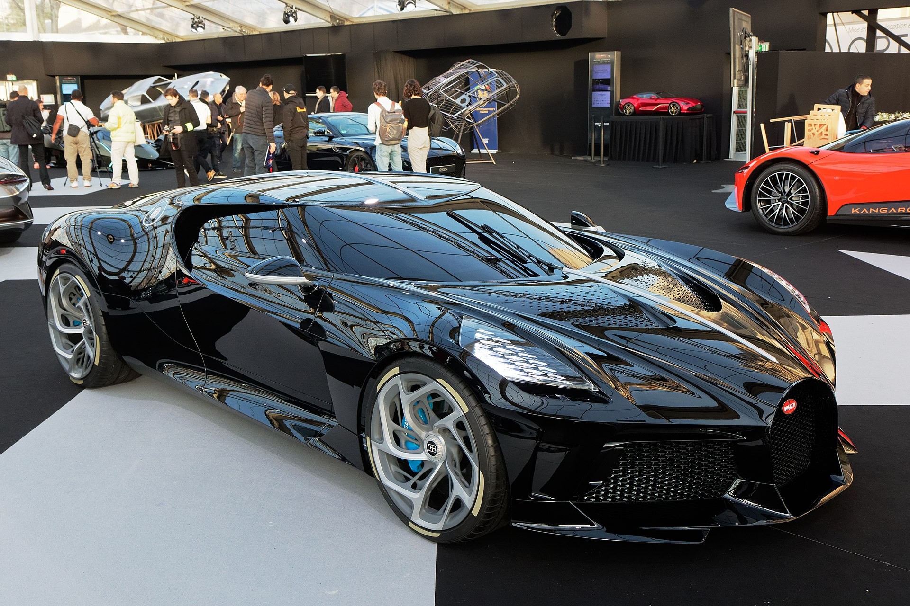
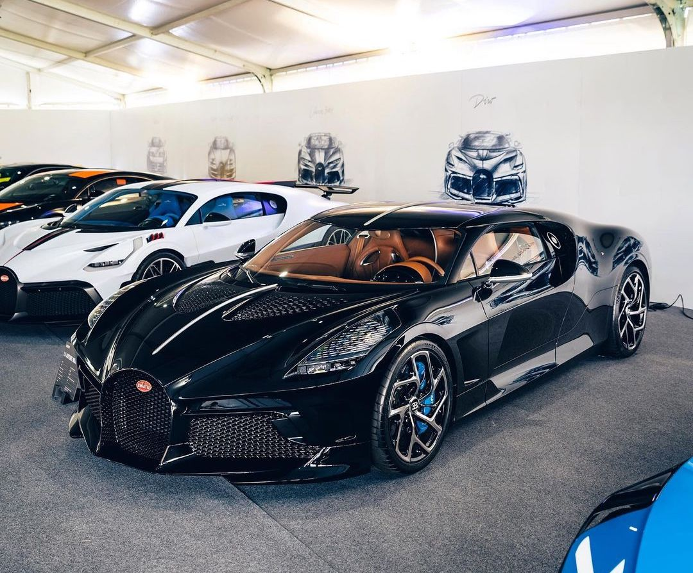

La Voiture Noire
La Voiture Noire is a one-off hypercar based on the Bugatti Chiron. It was unveiled at the 2019 Geneva Motor Show. It was designed to commemorate the 110th anniversary of Bugatti and the original Type 57 SC Atlantic. The car was sold for €11 million before tax, making it the most expensive new car ever sold.
The car is powered by the same 8.0-litre quad-turbocharged W16 engine from the Chiron, producing 1,479 hp (1,103 kW) and 1,600 Nm (1,180 lb-ft) of torque. The car is capable of reaching a top speed of 420 km/h (261 mph).
Gallery

Cédric JANODET via flickr.com

A Bugatti La Voiture Noire on display during the 2020 international automobile festival.

The real (non-show car) Bugatti La Voiture Noire on display in St. Moritz, Switzerland in 2022.
 Liam Walker, The Bugatti La Voiture Noire.
Liam Walker, The Bugatti La Voiture Noire.Pricing
- The Bugatti La Voiture Noire was sold for €11 million ($16,308,822.56 CAD) before tax, making it the most expensive new car ever sold. The car was sold to an anonymous buyer, who is believed to be former Volkswagen Group chairman Ferdinand Piëch.
- The car is powered by the same 8.0-litre quad-turbocharged W16 engine from the Chiron, producing 1,479 hp (1,103 kW) and 1,600 Nm (1,180 lb-ft) of torque. The car is capable of reaching a top speed of 420 km/h (261 mph).
Just for fun, enter the amount you can pay as a bi-weekly payment and hit "Calculate" to see how long it would take to pay off La Voiture Noire: